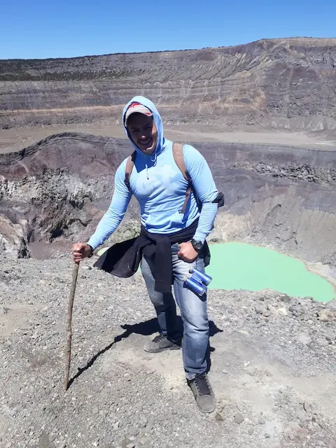

Data
Area: 2,083 m
Population: 6,486,000
Location: Santa Ana, El Salvador
Language: Spanish
Currency: United States Dollar (USD)
Time Zone: UTC−6
Calling Code: +503
Internet TLD: .sv
Type: Stratovolcano
Last Eruption: 2005
Nearby City: Santa Ana
Coordinates: 13.850°N, 89.630°W
Weather
Temperature:
Condition:
Wind:
Wind Chill: